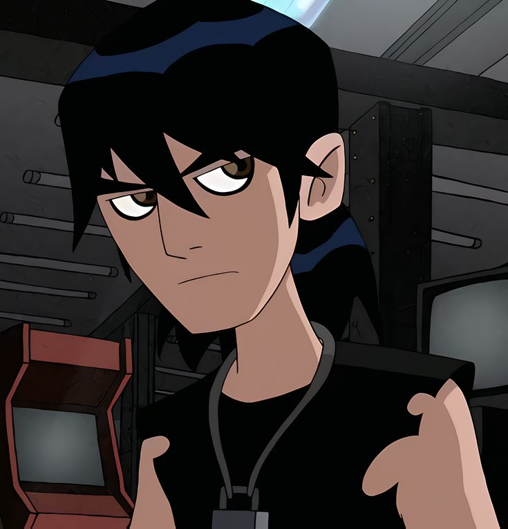

Nome completo:Kevin Ethan Levin.
- Idade: 11 anos
Nome completo: Kevin Ethan Levin.
Kevin foi introduzido como inimigo do Ben, sendo capaz de ansorver energia e replicar poderes alienígenas.
Teve a infância difícil e vive nas ruas.
Conheça o dublador do Kevin